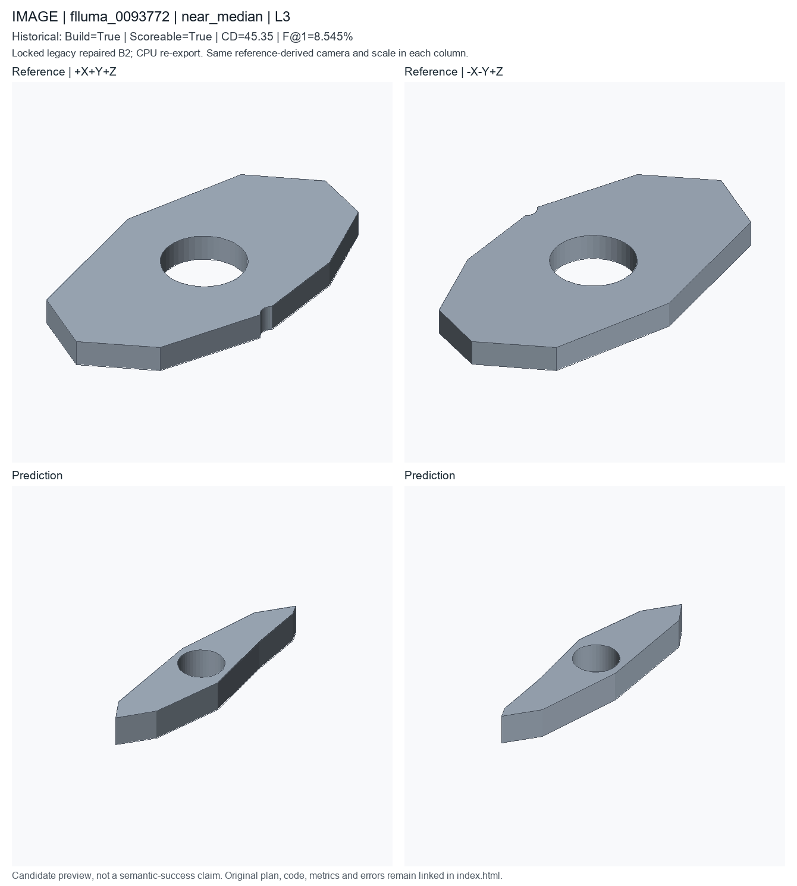
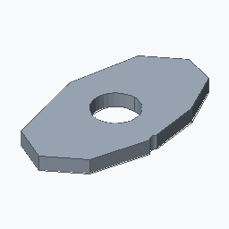

near_median; L3; historical deployed repaired B2. Candidate status is unchanged.
Nearest complete-scoreable-cohort cd percentile0.5, then f1 percentile0.5; already registered IDs excluded
These are new CPU exports of locked historical code, not newly generated model predictions or recovered original temporary STEP files. Executable does not mean semantically accurate. Historical seed/checkpoint-byte binding remains unresolved.


A represented as a procedural feature tree, approximately 80.3 by 45.353 by 6.1 mm. Build a crescent lug profile with an approximate 80.3 by 45.353 by 6.1 mm envelope.
PART flluma_0005710 CAT crescent_lug_profile UNITS mm SEED 20266224 PARAM center_hole_radius 5.12 MIN 3 MAX 16 SEM inner_radius PARAM hole_radius 1.43 MIN 0.8 MAX 5 SEM hole_radius PARAM thickness 7.1 MIN 2 MAX 14 SEM thickness F sketch_001 OP_SKETCH SEM extrude_profile ROLE profile_definition PARAMS points=[[-27.36,-1.2],[-19.34,-5.7],[1.12,-7.2],[24.88,-2.9],[29.52,0.9],[21.5,5.4],[4.76,7.2],[-12.44,2.7],[-24.88,0.4]] profile_type=polygon F extrude_001 OP_EXTRUDE SEM extruded_plate ROLE secondary_feature DEP sketch_001 TARGET sketch_001 PARAMS height=@thickness F hole_001 OP_HOLE_PATTERN SEM mounting_hole ROLE functional_feature DEP extrude_001 TARGET extrude_001.top_face PARAMS count=2 depth=THROUGH positions=[[-16.68,1.2],[17.84,-1.05]] radius=@hole_radius F hole_002 OP_HOLE_PATTERN SEM clearance_hole ROLE functional_feature DEP hole_001 TARGET hole_001.top_face PARAMS count=1 depth=THROUGH positions=[[0,0]] radius=@center_hole_radius END
# Literal first40 lines of executed prediction; full program is prediction.py
params = Parameters()
params.add('center_hole_radius', 5.12, min=3.0, max=16.0, semantic_type='inner_radius')
params.add('hole_radius', 1.43, min=0.8, max=5.0, semantic_type='hole_radius')
params.add('thickness', 7.1, min=2.0, max=14.0, semantic_type='thickness')
part = Part('flluma_0005710', category='crescent_lug_profile', parameters=params, seed=20266224, sample_id='flluma_0005710', units='mm')
sketch = part.sketch_polygon(name='crescent_lug_outer_profile', points=[[-27.36, -1.2], [-19.34, -5.7], [1.12, -7.2], [24.88, -2.9], [29.52, 0.9], [21.5, 5.4], [4.76, 7.2], [-12.44, 2.7], [-24.88, 0.4]], closed=True, semantic_type='extrude_profile')
solid = part.extrude(name='extrude_crescent_lug', profile=sketch, height=params['thickness'], semantic_type='extruded_plate')
holes = part.hole_pattern(name='crescent_lug_mounting_holes', target=solid.top_face(), radius=params['hole_radius'], depth='through', positions=[[-16.68, 1.2], [17.84, -1.05]], semantic_type='mounting_hole')
holes_2 = part.hole_pattern(name='crescent_center_hole', target=holes.top_face(), radius=params['center_hole_radius'], depth='through', positions=[[0.0, 0.0]], semantic_type='clearance_hole')
__all__ = ['part']